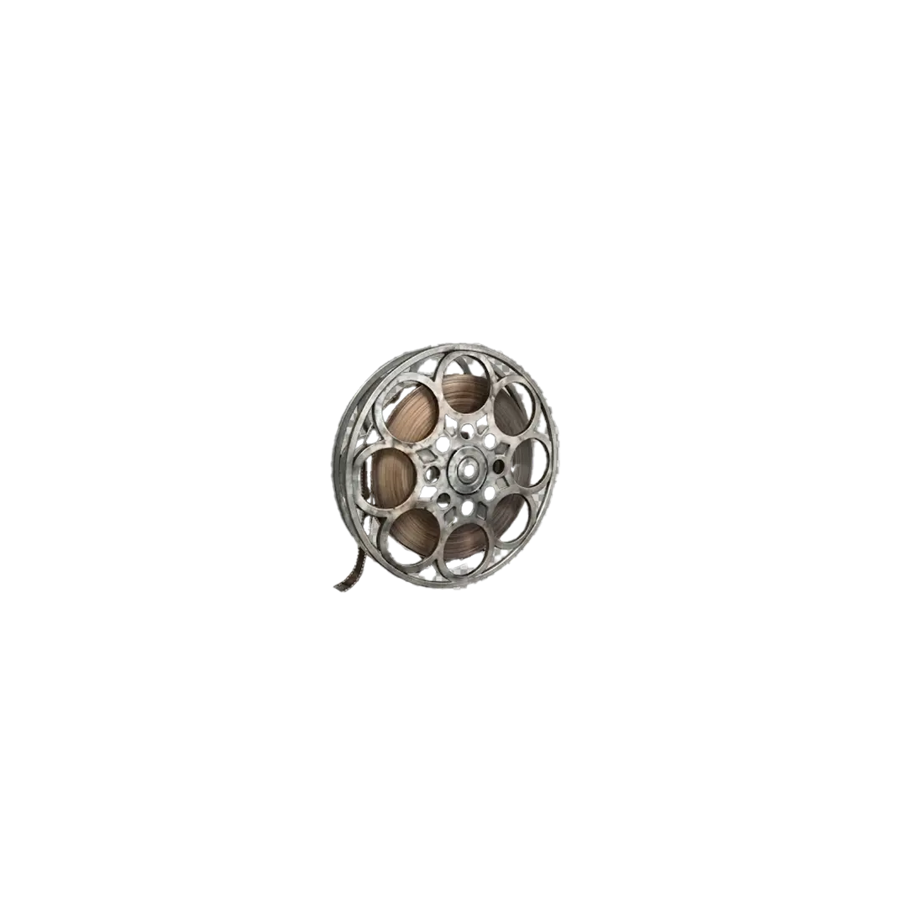

Aktualnie ten relikt możecie zdobyć w dowolnej rundzie, więc nie musicie czekać do wysokich fal, aby zacząć rytuał.

Zanim w ogóle wejdziecie do gry, musicie spełnić kilka warunków:
Aby portal do wyzwania w ogóle się pojawił, musisz wykonać konkretne zadanie na mapie:
PRO TIP: Szukaj kryształów od Mr. Peeks, które dają darmowe ulepszenie, lub użyj ulepszenia Pack Mule dla atutu Mule Kick, aby ułatwić sobie proces.
Gdy ulepszysz dziesiątą broń, portal pojawi się w lokacji Tea Garden (Ogród herbaciany). Przygotuj się, zanim do niego wejdziesz!
Zasada wyzwania jest brutalna: wrogów można zabić TYLKO za pomocą Scorestreaks (Nagrody za punkty).
PRO TIP: Trzymaj się blisko stołu rzemieślniczego obok lawy, aby błyskawicznie kupować nowe nagrody, gdy tylko te darmowe się skończą.
Po ukończeniu piątej fali zdobędziesz relikt Taśma Filmowa, ale uważaj – ma on swoją mroczną cenę: